My name is Ainol Syakirah Binti Sarudin (called by Ainol, Syakirah, Kiki and Kiah)
I am 21 Years Old and was born at Hospital KPJ Shah Alam on 4th March 2000
I am living at No.9, Jalan Kunang-Kunang 20/8, Seksyen 20, 40300 Shah Alam, Selangor
I am just an extra-hyper and multi feeling person that willingly to do anything to make my surrounding happy!
Here I share a few things that I love to read, listen and watch.
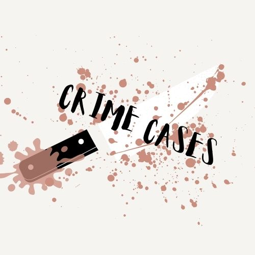
Three cases that keep running on my nuggin' and keep give me gruesome. Killer keep running around us,
we just need to be ready to defend ourselves and do not trust people easily.
All the information can get at murderpedia.org
WARNING! THE CONTENT MIGHT BE SENSITIVE
Ted Bundy, genius killer
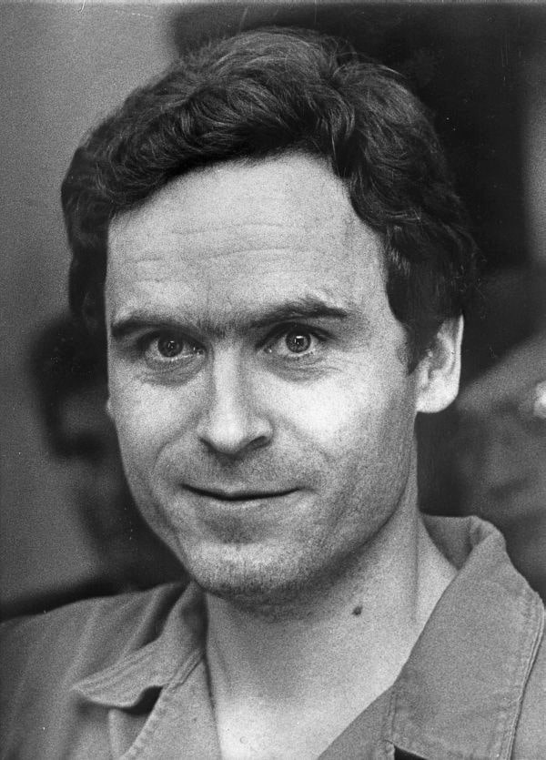
Theodore Robert Bundy or known as Ted Bundy was born on November 24, 1946 at Burlington, Vermont, United State
Died on January 24, 1989 at Starke, Florinda by electric chair.
He was one of American serial Killer and rapist.
His target was girls and young women.
He was successful student with his intelligence and great on social skills.
With advantages that he got, he used it as weapon to get his victims.
One of his agenda to get the victim was pretending that he was bad injured and needed help to get to his car.
The victim who was innocent, just follow him and never guess that he had bad intention.
Got knock by the metal bar to death, and raped at the same time.
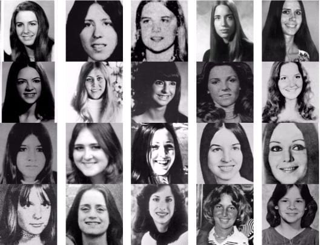
He was sentenced to death due to case that he rape and murder 12 years old girl.
Issei Sagawa, Cannibalism
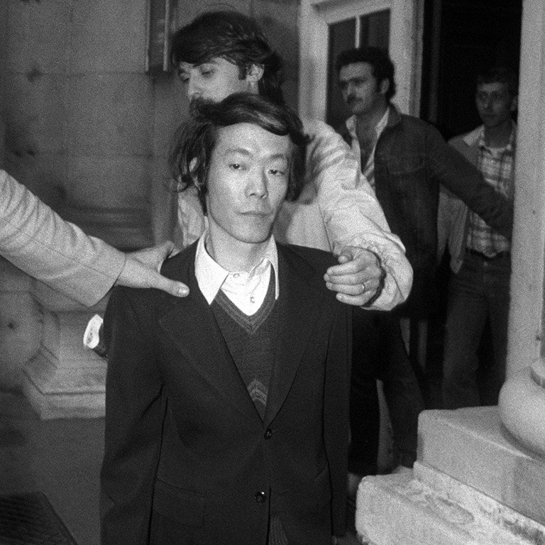
Issei Sagawa is born on June 11, 1949 in Kobe, and a wealthy parents.
He was a student in University of Paris but on June 11, 1981
Issei Sagawa invited Renee Hartevelt, one of his classmate for a dinner at
his house and to further their discussion about the subject they learn before.
Upon her arrival, he shot her in the neck with a rifle while she sat with her back at him,
once she is not breathing, he start his plan to eat her. Because of the lack of love himself,
by saying that he is a weak, ugly and small, make him want to absord Renee energy by eating her
cause of her health, beauty and tall than him.
By looking at Renee, he start his plan with having sex with the corpse then begin to eat her hips
legs. He said that he shocked with the corn-colored of human fat. He also described the meat as soft
and odorless like tuna. He cut out all the pieces that he want to eat and after 2 days dumb the remain at the lake,
but was seen in the act and arrested by the French police.
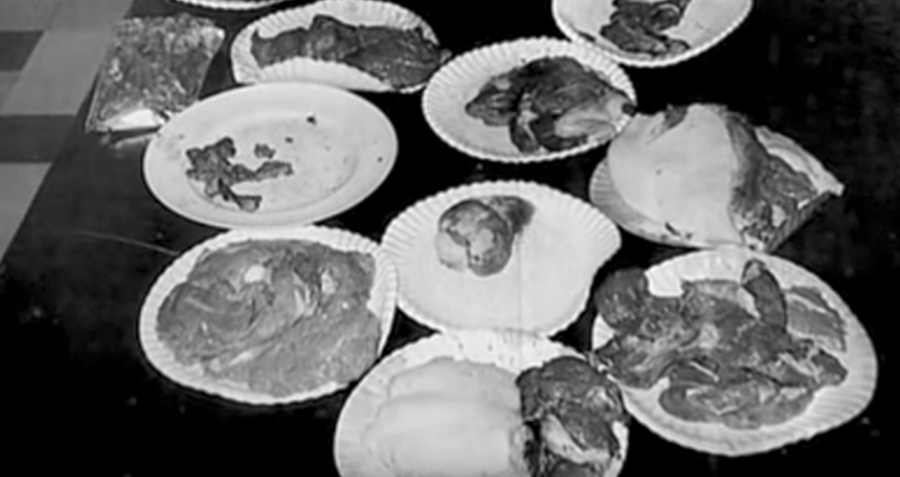
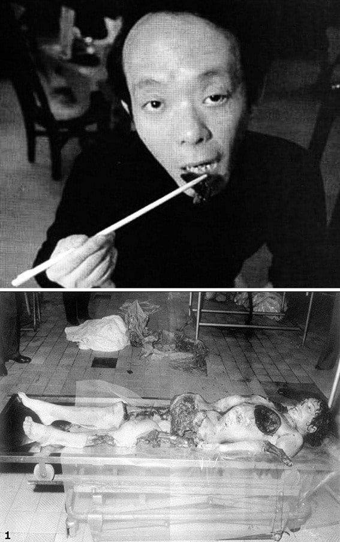
French judge, Jean-Louis Bruguieres found him legally insane and unfit to stand trial and ordered
Sagawa to be held in a mental institution. Sagawa likely to contributed to the French authorities' decision to have
him extradited to Japan. In Japan, he was taken to Matsuzawa hospital, where examining psychologist found him to be sane
but 'evil'
However, Japanese authorities found it to be legally impossible to hold him, due to lacked certain important papers from the
French court. Sagawa checked himself out of the mental institution on August 12, 1986 and has been a free man till this day.
On 2013, Sagawa was hospitalized from a cerebral infarction, which damaging his nervous system.
Silent Killer, Edward Theodore Gein
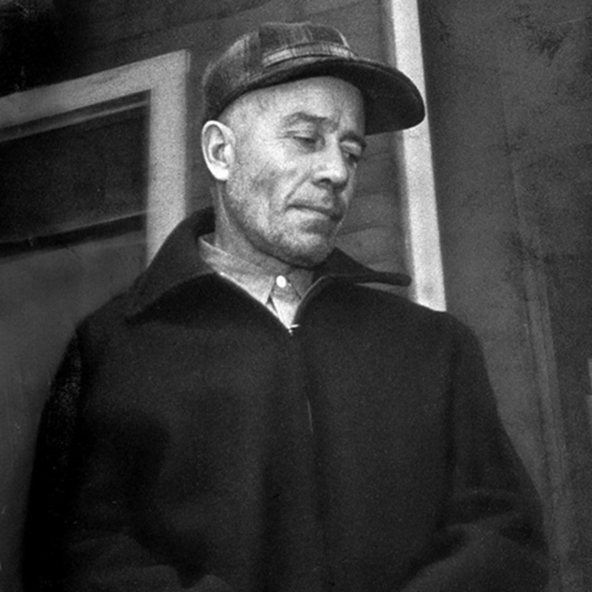
Edward Theodore Gein, or Edward Gein was born on August 27, 1906. He was an American Murderer and body
snatcher. He was doing his crimes around his hometown of Plainfield, Wisconsin.
Police have found body parts in his house in 1957, and that time Gein have confessed that he had kill 2 women ;
Mary Hogan in 1954 and Bernice Worden in 1957 who reportly were missing before found them in Ed's house.
Body of Bernice Worden was found in Gein's shed, hung upside down by ropes at her wrists, with a crossbar at her ankles.
The torso was "dressed out" like that of a deer. She had been shot with a rifle.
The police have found :
Noses
Whole human bones and fragments
9 masks of human skin
Bowls made from human skulls
10 female heads with the tops sawed off
Human skin covering several chair seats
Mary Hogan's head in a burlap sack
9 vulvas in a shoe box
Skulls on his bedsposts
Organs in the refrigerator
A pair of lips on draw string for a windowshad
A belt made from human female nipples
A lampshade made from the skin from a human face
Gein admitted robbing 9 graves, to full-filled his desire to make as many artifacts he want.
Shortly after his mother's death on December 29, 1945 with a series of strokes, Gein had decided he wanted a sex change
and began to create a "woman suit" so he can pretend to be a woman.
On July 26, 1984, Gein died of respiratory and heart failure due to cancer in Goodland Hall at the Mendota Mental Health Institute.
His grave was site in the Plainfield cemetery.
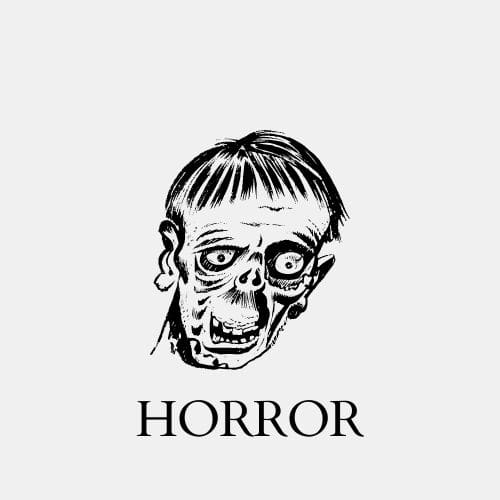
My new house
We bought an old house, my boyfriend and I. He's in charge of the "new"
construction – converting the kitchen in to the master bedroom for instance,
while I'm on wallpaper removal duty. The previous owner papered EVERY wall and
CEILING! Removing it is brutal, but oddly satisfying. The best feeling is getting
a long peel, similar to your skin when you're peeling from a sunburn. I don't know
about you but I kinda make a game of peeling, on the hunt for the longest piece before
it rips.Under a corner section of paper in every room is a person’s name and a date.
Curiosity got the best of me one night when I Googled one of the names and discovered
the person was actually a missing person, the missing date matching the date under the
wallpaper! The next day, I made a list of all the names and dates. Sure enough each name
was for a missing person with dates to match. We notified the police who naturally sent
out the crime scene team. I overhead one tech say "yup, it's human." Human? What's human?
"Ma'am, where is the material you removed from the walls already? This isn't wallpaper you
were removing."
by BatoutofHell821
Wrong Thought
He awoke to the huge, insect like creatures looming over his bed and screamed his lungs
out. They hastily left the room and he stayed up all night, shaking and wondering if it
had been a dream.The next morning, there was a tap on the door. Gathering his courage,
he opened it to see one of them gently place a plate filled with fried breakfast on the
floor, then retreat to a safe distance. Bewildered, he accepted the gift. The creatures
chittered excitedly.This happened every day for weeks. At first he was worried they were
fattening him up, but after a particularly greasy breakfast left him clutching his chest
from heartburn, they were replaced with fresh fruit. As well as cooking, they poured hot
steamy baths for him and even tucked him in when he went to bed. It was bizarre.One night,
he awoke to gunshots and screaming. He raced downstairs to find a decapitated burglar being
devoured by the insects. He was sickened, but disposed of the remains as best he could. He
knew they had just been protecting him.One morning the creatures wouldn't let him leave his
room. He lay down, confused but trusting as they ushered him back into bed. Whatever their
motives, they weren't going to hurt him.Hours later a burning pain spread throughout his body.
It felt like his stomach was filled with razor wire. The insects chittered as he spasmed and
moaned. It was only when he felt a terrible squirming feeling beneath his skin that he realised
the insects hadn't been protecting him. They had been protecting their young.
by DarkAlliGator
Aura
Everyone loves the first day of school, right? New year, new classes, new friends. It's a day
full of potential and hope, before all the dreary depressions of reality show up to ruin all
the fun.I like the first day of school for a different reason, though. You see, I have a sort
of power. When I look at people, I can...sense a sort of aura around them. A colored outline
based on how long that person has to live. Most everyone I meet around my age is surrounded by
a solid green hue, which means they have plenty of time left.A fair amount of them have a
yellow-orangish tinge to their auras, which tends to mean a car crash or some other tragedy.
Anything that takes people "before their time" as they say.The real fun is when the auras
venture into the red end of the spectrum, though. Every now and again I'll see someone who's
basically a walking stoplight. Those are the ones who get murdered or kill themselves. It's
such a rush to see them and know their time is numbered.With that in mind, I always get to
class very early so I can scout out my classmates' fates. The first kid who walked in was
basically radiating red. I chuckled to myself. Too damn bad, bro. But as people kept walking
in, they all had the same intense glow. I finally caught a glimpse of my rose-tinted reflection
in the window, but I was too stunned to move. Our professor stepped in and locked the door, his
aura a sickening shade of green.
by Zenryhao
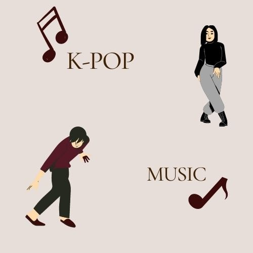
SAY THE NAME, SEVENTEEN
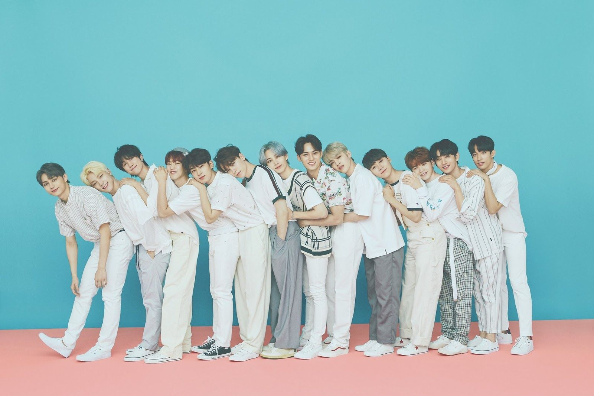
Korean Idol group that full with 13 members, with 3 group units.
They made their debut on May 26, 2015 with song Adore You
They are group under Pledis entertainment, along with After School and Nuest
They got first win on May 4, 2016 with song, Pretty U
They name their fans, CARAT with colors, Rose Quartz and Serenity
Members based on their year of birth :
Scoups (Choi Seung Cheol)
Jeonghan (Yoon Jeong Han)
Joshua (Hong Ji Soo)
Jun (Moon Jun Hwi)
Hoshi (Kwon Soon Young)
Wonwoo (Jeon Won Woo)
Woozi (Lee Ji Hoon) - Producer / Song Writer
The8 (Seo Myung Ho)
DK/Dokyeom (Lee Seok Min)
Mingyu (Kim Min Gyu)
Seungkwan (Boo Seung Kwan)
Vernon (Choi Han Sol)
Dino (Lee Chan)
This two is my ultimate bias in Seventeen and both is Chinese Nationalities
BLACKPINK IN YOUR AREA
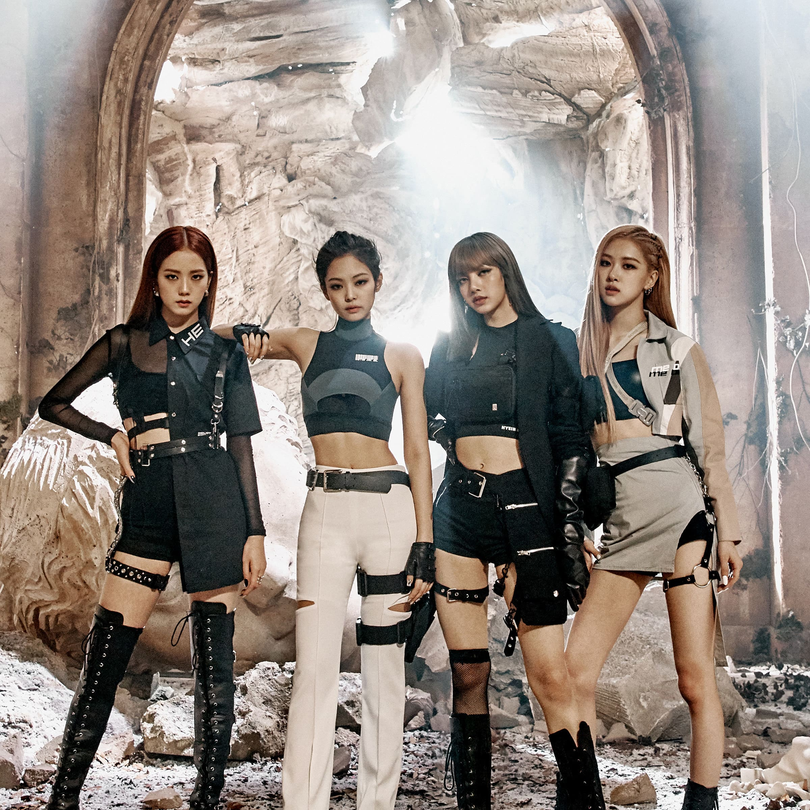
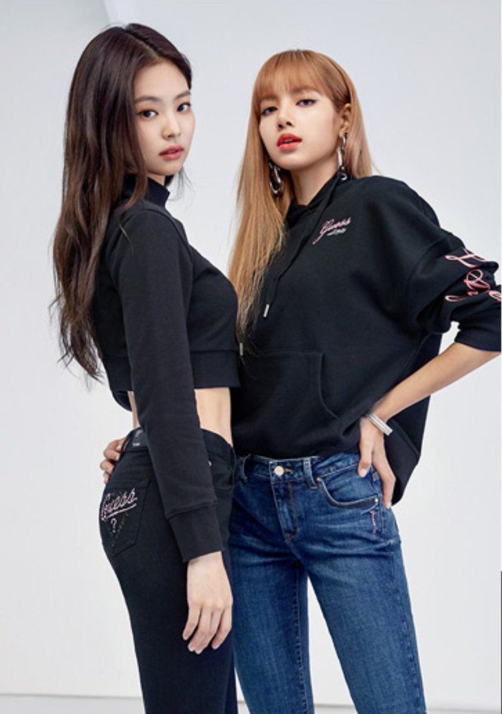
Blackpink is a girl group korean idol which consist of 4 members
Jennie, Jisoo, Rose, and Lisa
They debut on August 8, 2016 under YG Entertainment and signed with U.S. label Interscope
Records on October 23, 2018
Their fandom name is BLINK
They got first win was after thirteen days of their debut with song, Whistle
KING OF YG, BIG BANG
The legendary Big Bang is a worldwide famous korean boy group
They debut on August 19, 2006 under YG Entertainment but on March 11, 2019,
one of the member were announced that he left the entertainment industry.
Fandom : VIP with Yellow crown light-sticks
The group consist 4 members
Kwon Ji Young (G-Dragon)
Born on August 18, 1988
Choi Seung Hyun (TOP)
Born on November 4, 1987
Dong Yong Bae (Taeyang)
May 18, 1988
Kang Dae Sung (Daesung)
April 26, 1989
Lee Seung Hyun (Seungri)
December 12, 1990
KING OF KPOP, SUPER JUNIOR
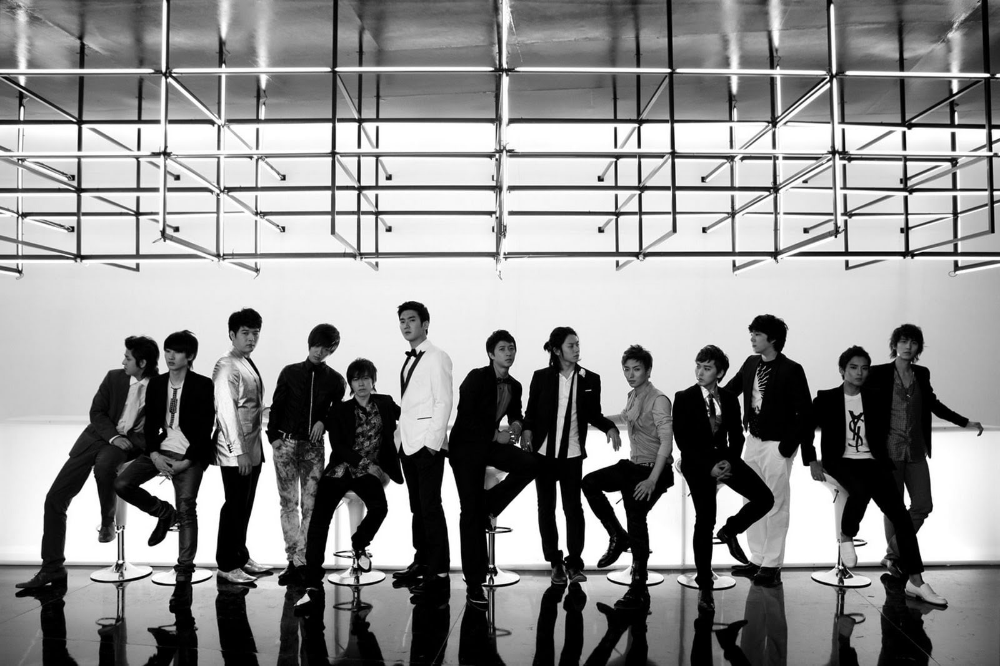
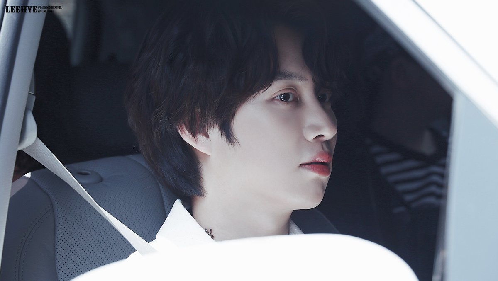
SUPER JUNIOR is a group that debut on November 6, 2005 under SM entertainment
which known as the longest exist kpop group among others
Fandom : ELF (Ever Lasting Friends)
Color : Pearl Sapphire Blue
Overall, Super Junior consist 15 members with different units
Park Jung Soo (Leeteuk)
Kim Hee Chul (Heechul)
Kim Jong Woon (Yesung)
Shin Dong Hee (Shindong)
Lee Hyuk Jae (Eunhyuk)
Choi Si Won (Siwon)
Lee Dong Hae (Donghae)
Kim Ryeo Wook (Ryeowook)
Cho Kyu Hyun (Kyuhyun)
Lee Sung Min (Sungmin)
Zhou Mi
Kim Young Woon (Kangin)
Yoo Heon Hwa (Henry)
Hankyung (Han Geng)
Kim Ki Bum (Kibum)
×
Family
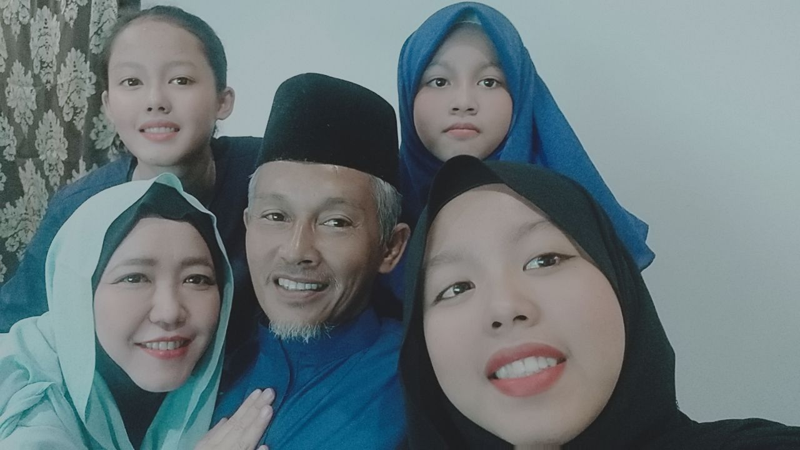
This is my family!
The tree house start with my dad, Sarudin Bin Noordin, 52 years old who is from Bandar Bersejarah Malacca.
Next is my mom, Maisarah binti Rahman, 50 years old and she was born at Sekinchan, Selangor but grown up at Jengka 15, Pahang
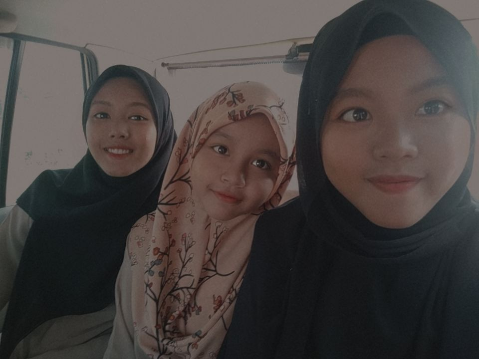
Going to skip me! First up, my younger sister. Ainul Syauqina binti Sarudin, 18 years old and freshly graduate from SPM 2020
Last, my youngest sister, Ainul Syamsina binti Sarudin, 14 years old.
Three of us was born at the same place, which near with our home.
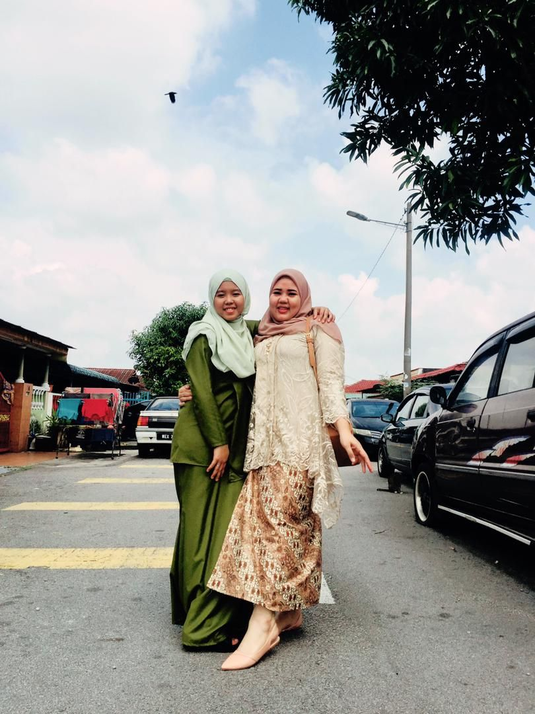
Introducing to you, this is my cousin who I treat her like my own sister.
Her name is Nurul Izzati binti Tajuddin, 26 years old and work as frontliner at Aurora Clinic
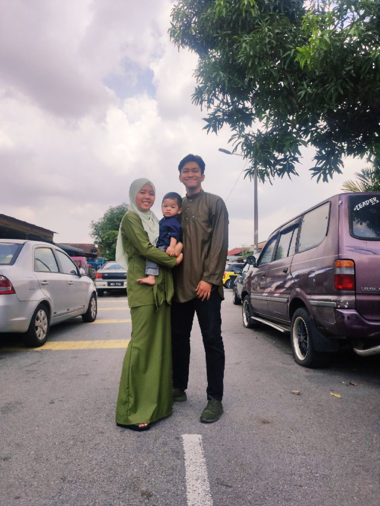
This is my fiance and my nephew. They both incharge on cheering me up everytime I was down and sad.
Fiance, Muhammad Alif Aidil Adha bin Othman Zailani
Nephew, Aisy Syazwan bin Aiman Syahmi
×
Friends
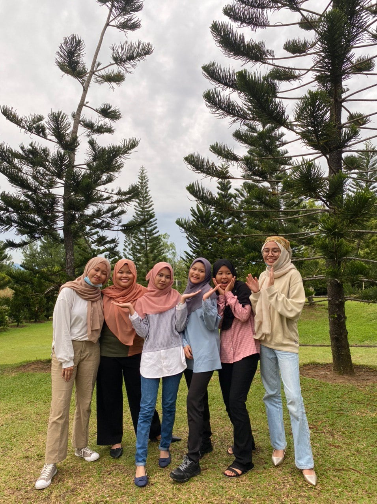
Best Bud
My longest fangirls and supporters till now!
Ain, Shikin, Nisya, Deena and Wana
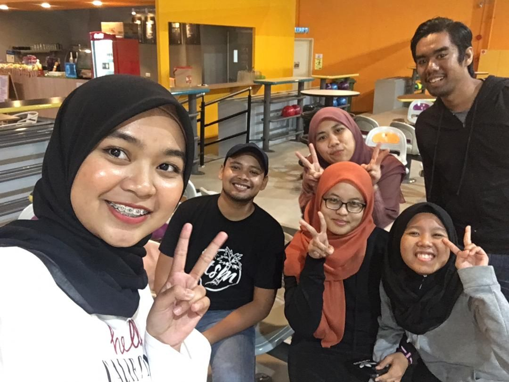
Work Mates
Let me introduce who they are
Kak Arissa, Abang Isma, Kak Reen, Kak Wan and Abang Azizi
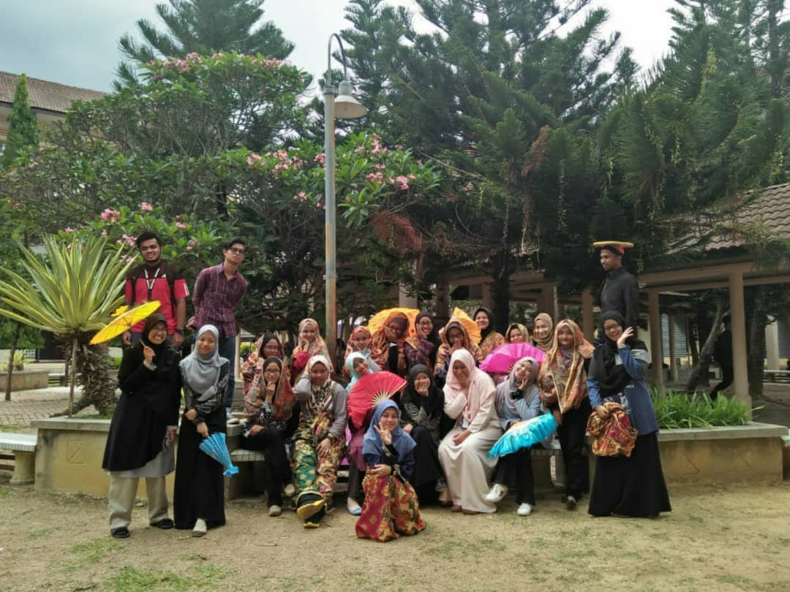
KIM120 TEAM
One big problematic family!
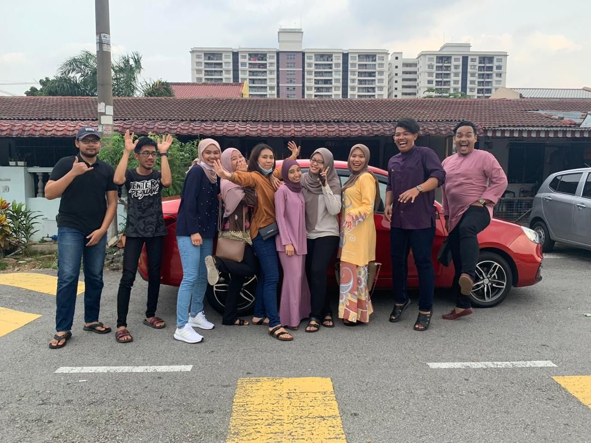
Another Whisk Team reunion!
Visiting one of our friend's home is such a bless!
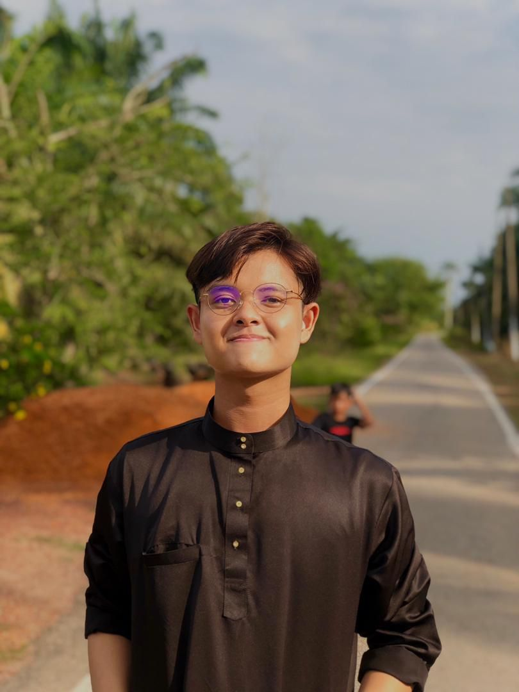
Best Guy Friend Ever!
Mirul aka dobot
He lost his jawline due to Covid-19.
We do not have a picture together because of how 'shy shy cat' he is
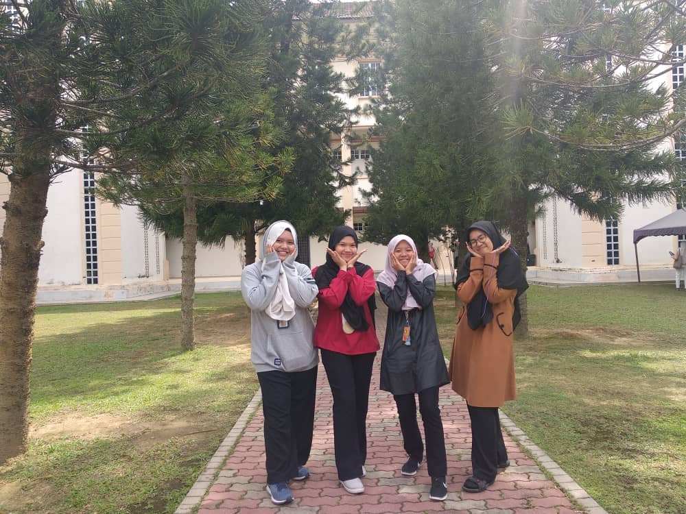
GroupMate for Life!
Here we have Dayah the Potato girl
Dayana, one and only Tempe
Insyirah, the energy of Happiness
And me, Ainol the Kedondong Lover
EDUCATION
SEKOLAH KEBANGSAAN SEKSYEN 20
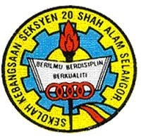
Address :
Sekolah Kebangsaan Seksyen 20, Jalan Rama-rama 20/2, Seksyen 20, 40300 Shah Alam
School : 2006-2012 (preschool till standard 6)
Position :
Librarian (2010-2012)
Athlete :
Runner, Netballer, Handballer, Hockey player
Extra information:
Involve on dancing competition and join singing contest under school.
Got 5A's for UPSR
SEKOLAH MENENGAH KEBANGSAAN SEKSYEN 19
Address :
Sekolah Menengah Kebangsaan Seksyen 19, Jalan Gelora 19/16, Seksyen 19, 40300 Shah Alam
School : 2013-2017 (Form 1 till Form 5)
Position :
Librarian- Access Room (2013-2016)
Pembimbing Rakan Sebaya (2016-2017)
Achievement :
PT3 : 3A 6B 1C
SPM : 4A 3B 2C 1E
Highest marks for Subject ICT's SPM, under SMK Seksyen 19
Experience :
Be a performer (dance) on Recycle Day, Teacher's Day, Hi-Tea Pengawas SMK Seksyen 19 and Cocurricular's Day
Facilitator for Science Week
Involving in shortfilm competition, school and international level
UiTM CAWANGAN KEDAH
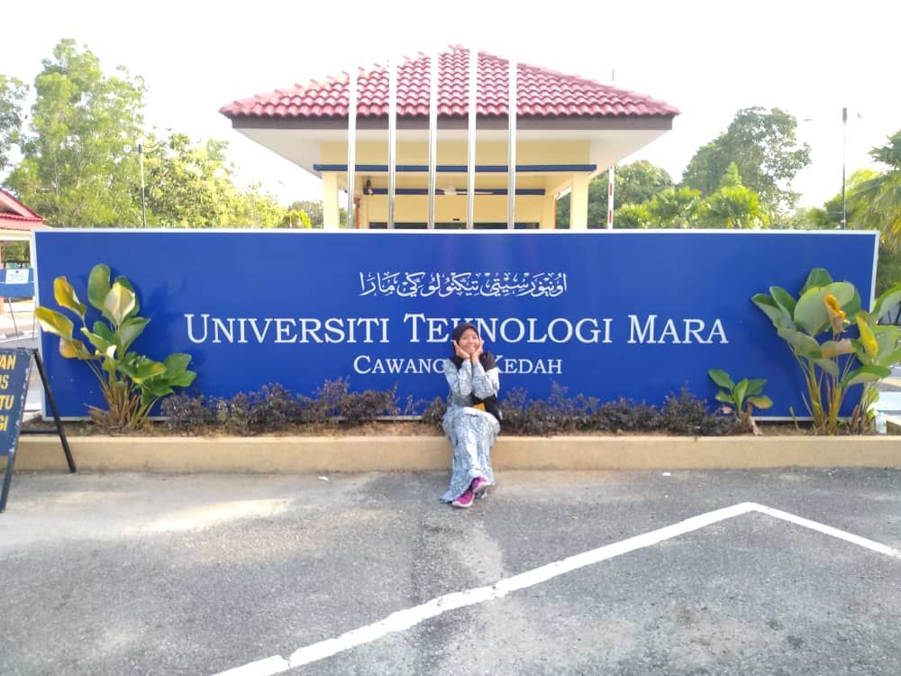
Address : UiTM Cawangan Kedah, Kampus Sungai Petani, 08400 Merbok, Kedah
Diploma in Library Management (2018-2020)
Position : In Association of Library Management (Kedah)
Sports exco (Semester 1 - Semester 2)
Vice President (Semester 3)
President (Semester 4)
Achievement :
Bronze Award on Indelib Program
GPA / CGPA
Semester 1 : 3.27 / 3.27
Semester 2 : 3.52 / 3.40
Semester 3 : 3.55 / 3.45
Semester 4 : 3.54 / 3.47
Experience :
Participate MASMED's program to Spritzer's Factory, Antong Sdn Bhd and Jeruk Pak Ali's Factory
Participate on Program Rumah Warga Emas (PAWE)
Be part as facilitator for Motivation Camp under Faculty Information Management
Conduct my own event under ALiM
UiTM CAWANGAN PUNCAK PERDANA
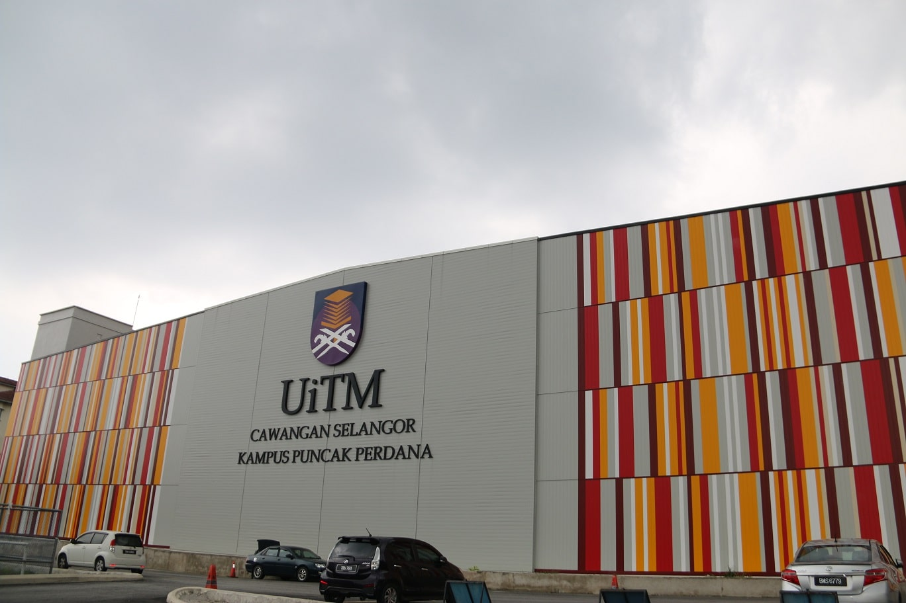
Address : UiTM Cawangan Puncak Perdana, Jalan Pulau Indah Au10/A, Puncak Perdana, 40150 Shah Alam
Bachelor of Information Science (Hons) Library Management (2021- )
WORK EXPERIENCE
De PALMA BANQUET TEAM
2014-2017
Catering Team
Serving the guest (food and beverage)
For event : Wedding and hi-tea
Break fasting event
Be part of in-charge person to usher guest to their table
What did I learn
Be punctual especially the time
Follow the instruction given by the leader
Be polite and do not downgrade others
Be responsible and considerable
WHISK INGREDIENTS SDN. BHD.
2018-2021
Packaging part
Knowing various type of ingredients
Get to taste something new
Customer Service
Help customer to find the ingredients they wanted
Give the best suggestion to the customer
Giving the best services to the customer
Part of the cashier team
What did I learn
Need to work quickly and do not be lazy
Need to keep hygiene
Bond a bold relationship among staff
Need to be positive and considerable
PERBADANAN PERPUSTAKAAN AWAM SELANGOR
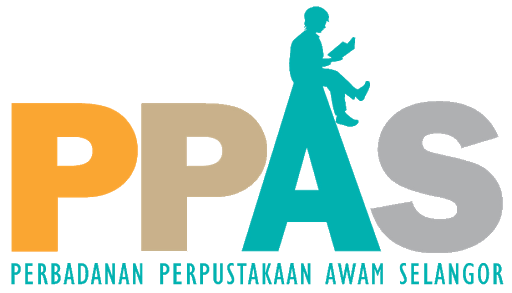
Jan 2020 - Feb 2020
Internship
Cataloging Department
Collection Department
Reference Department
Customer Services
Development and Maintenance Department
Corporate Department
What did I learn
Job scope in library is wide
Be open-minded
Be good at communication skill
Participate by giving opinion
Work-hard and always be tidy
Ready to learn something new
SKILLS
Soft Skill
Effective Communication
Open mindedness
Teamwork
Willingly to learn